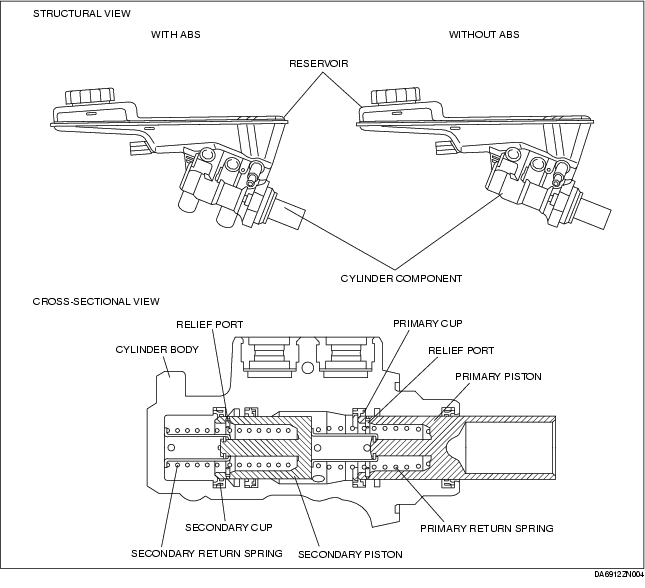

MASTER CYLINDER CONSTRUCTION
id041100100700
• With the adoption of a mini-master cylinder, cylinder length is reduced and engine compartment space is easily preserved.
• With the adoption of a plunger-type (cups do not slide), 23.81 mm bore cylinder for the mini-master cylinder, durability has been improved.
-
Note
-
• Plunger type: A system where the cups are fixed on the side of the cylinder, and the piston slides through the inner perimeter of the cups.
• The master cylinder cannot be disassembled except for the reservoir. Therefore, if there is any malfunction in the interior of the master cylinder, replace the cylinder component without disassembling.
